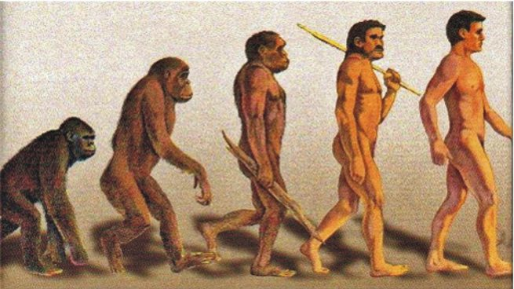
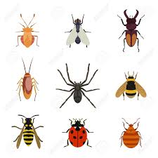
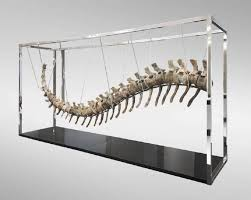
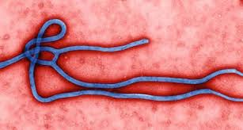
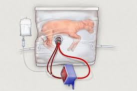
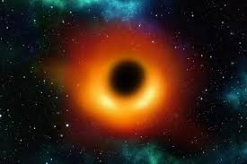

El corazón es el órgano principal del sistema circulatorio. Su función es propulsar la sangre a todo el cuerpo. Situado en el mediastino, está constituido por cuatro cavidades —dos aurículas en la región superior y dos ventrículos en la inferior—, las arterias aorta y pulmonar, las venas cavas inferior y superior, las válvulas bicúspide, tricúspide, aórtica y pulmonar, y tres capas protectoras: el pericardio, el miocardio y el endocardio.
Un grueso tabique que separa las zonas derecha e izquierda impide que la sangre pase directamente de un lado al otro. Para arribar al lugar del que partió, el flujo sanguíneo debe recorrer el circuito general y el circuito pulmonar. En el general, la sangre, rica en oxígeno, es enviada desde el ventrículo izquierdo hacia la arteria aorta y desde allí es transportada a todo el cuerpo por otras arterias y capilares. Vuelve por las venas cavas con abundancia de desechos hasta la auricula derecha. En cambio, en el circuito pulmonar, la sangre, cargada de impurezas y dióxido de carbono, es conducida desde el ventrículo izquierdo a las arterias pulmonares por las que llega a los pulmones, es oxigenada por esos órganos y emprende su retorno hasta la aurícula izquierda.
Al impulsar la corriente sanguínea se contrae, y cuando la recibe, se dilata. Estos movimientos son la sístole y la diástole y su conjunto es denominado ciclo cardíaco o latido. En él son fundamentales los movimientos de las válvulas cardiacas para permitir o impedir el paso de la sangre. En condiciones normales, la frecuencia cardíaca de los seres humanos varía entre sesenta y siete y setenta y cuatro latidos por minuto. Los latidos pueden percibirse al colocar la mano en la zona izquierda del pecho, o al presionar levemente otros sectores como la yema de los dedos o la sien.
El suceso más antiguo que puede datarse en el universo que conocemos se remonta a unos 12.000 millones de años. En este primer instante, toda la energía (y todo el espacio) del universo se encontraba concentrada en un punto, que fue el origen de una gran explosión (big bang). Durante los primeros segundos, la temperatura era de más de un billón de grados y toda la energía se hallaba en forma de radiación. Durante los primeros 10 segundos se formaron las partículas elementales y al cabo de 15 minutos se formaron núcleos de hidrógeno y helio, en proporción de cuatro a uno. Unos 10.000 años después la temperatura había descendido a unos 100.000 grados y se formaron los primeros átomos de hidrógeno. Al cabo de unos 400.000 años el hidrógeno empezó a condensarse en nubes (las futuras estrellas), las cuales a su vez se agrupaban en cúmulos mayores (las futuras galaxias).
Como sucede en los humanos, la inteligencia general en los chimpancés se encuentra correlacionada con la capacidad para el autocontrol y para la demora de la gratificación, según publican científicos de la Universidad Estatal de Georgia en la revista Current Biology.
Para su estudio, el grupo se basó en la denominada «prueba de malvavisco», un experimento llevado a cabo originalmente en los años sesenta del siglo pasado por investigadores de la Universidad de Stanford. En él, los sujetos (niños) tienen la opción de recibir una recompensa pequeña e inmediata (un solo malvavisco colocado delante de ellos) o esperar, y a cambio, obtener una gratificación mayor (dos malvaviscos). Los niños que se desempeñan bien en este test de autocontrol también presentan un buen desempeño en las pruebas de inteligencia general. Esta relación se ha comprobado ahora en los chimpancés.
Entre los trastornos mentales frecuentes, la depresión se ubicó hoy día como la causa principal de discapacidad a nivel mundial y con un gran aporte a la carga de morbilidad. Se calcula que actualmente afecta a 300 millones de personas en el mundo, la mayoría mujeres y en el peor de los casos, puede llevar al suicidio (OMS, 2017; Universia Argentina, 2017).
La depresión tiene como uno de sus síntomas la angustia y una incidencia directa en la capacidad que tienen las personas de llevar adelante las actividades cotidianas de su vida, lo cual repercute negativamente en las relaciones familiares y en el entorno social (Universia Argentina, 2017). La Organización Mundial de la Salud (OMS), considera que este trastorno mental constituye hoy la principal causa de morbilidad y discapacidad entre adolescentes, y el suicidio la tercera causa de defunción en el mundo. Violencia, pobreza, humillación y sentimiento de desvalorización son factores que pueden aumentar el riesgo de padecer problemas de salud mental (OMS, 2017). En otro informe, OMS señala que a nivel mundial más de 800.000 personas se suicidan cada año, siendo el intento de suicidio no consumado el factor individual de riesgo más importante (OMS, 2016)
El equilibrio entre la vida profesional y laboral, la presión por publicar, la actitud del supervisor, la toma de decisiones y la perspectiva de construir una carrera dentro de la universidad o fuera de ella. Todos estos factores impactan de forma negativa en la salud mental de los estudiantes de doctorado. Los datos son claros: un 32 por ciento podría tener o desarrollar episodios depresivos u otros trastornos psiquiátricos. Por consiguiente, el trabajo, publicado en Research Policy, urge a las universidades a implementar medidas que corrijan esta situación.
Los científicos nunca se plantearon implantar los embriones humanos una vez modificados. Sin embargo, demostraron que la herramienta CRISPR/Cas9 puede usarse para reparar una mutación en el gen MYBPC3. Ésta es una de las principales causas genéticas de la cardiomiopatía hipertrófica, una severa enfermedad cardíaca. Tras la fecundación, los investigadores eliminaron el gen paterno, mutado, y lo sustituyeron por la copia normal de la madre. La reparación no siempre funcionó, pero el logro muestra una vez más el enorme potencial de la técnica. El texto completo puede leerse en la revista Nature.
Los estereotipos comunes asocian la capacidad intelectual de alto nivel con los hombres. Ello desanima a las mujeres a estudiar carreras como física o filosofía, pues no se consideran suficientemente listas. En su trabajo, publicado en la revista Science, los científicos muestran que tales prejuicios aparecen a la tierna edad de 6 años. Según los resultados, las niñas creen que sus compañeros masculinos son más inteligentes. Por consiguiente, ellos pueden participar en juegos pensados para gente con una gran inteligencia. Ellas, en cambio, se alejan de este tipo de actividades.
Durante 27 años, los científicos han analizado la población de insectos voladores en distintas zonas de Alemania. Los resultados son alarmantes. El número de estos animales invertebrados ha disminuido un 75 por ciento. Esta reducción también se han observado en todo el planeta. Ello preocupa a los investigadores, pues puede afectar de forma dramática tanto a la cadena trófica o alimenticia, como a los ecosistemas. Se desconoce el porqué de esta desaparición. Ni el cambio climático o la alteración de su hábitat parecen tener relación alguna. El estudio lo publicó la revista Plos One.
En los últimos 40 años, el número de adultos y niños obesos se ha multiplicado por diez. La tendencia al alza se observa a nivel mundial. En el estudio participaron 128,9 millones de personas de 200 países diferentes. Los científicos analizaron el peso y la altura de los individuos mayores de 5 años desde 1975 hasta 2016. En países europeos, la evolución del índice de masa corporal, aunque elevado, se mantuvo estable. Sin embargo, se detectó un incremento importante en países asiáticos, africanos y de la América Latina. Además, en todo el mundo, se redujo el número de personas con bajo peso corporal. El trabajo se publicó en la revista The Lancet.
Hace 20 años, se descubrieron los primeros dinosaurios con plumas. Numerosos fósiles se han hallado desde entonces. Sin embargo, la presión de los sedimentos rocosos comprime los restos y no permite estudiar las características tridimensionales del plumaje. Por eso, el descubrimiento de una cola de dinosaurio con plumas en el interior de un trozo de ámbar es excepcional. Esta pieza, de 99 millones de años de antigüedad, conserva la estructura e incluso los folículos del plumaje. Ello permitirá a los científicos estudiar cómo las plumas han evolucionado a lo largo de los años. La revista Current Biology publicó el trabajo.
Tras el brote detectado en el oeste de África, los científicos desarrollaron una nueva vacuna contra el virus del Ébola. La campaña de vacunación se realizó en zonas de Guinea y Sierra Leona. Los resultados fueron muy positivos. La eficacia de la inmunización fue del 100 por cien. No se observaron nuevos casos de contagio. Sin embargo, más de la mitad de las personas vacunadas experimentaron algún tipo de efecto secundario. La mayoría fueron leves: dolor de cabeza, fatiga o dolor muscular. Aun así, el trabajo, publicado en The Lancet, ofrece esperanza ante un eventual retorno del virus.
Los científicos han diseñado un sistema que permite alargar el embarazo fuera del seno materno. Esta matriz artificial posibilita el correcto desarrollo de corderos prematuros. El dispositivo proporciona al feto los nutrientes y el oxígeno necesarios para la maduración de sus órganos. En especial, los pulmones y el cerebro. Además, los animales pueden permanecer en su interior hasta 4 semanas. Este estudio, publicado en la revista Nature Communications, abre nuevas posibilidades para el cuidado de los bebés humanos prematuros.
¿Afecta el sexo del médico a la curación de los enfermos ingresados en un hospital? La respuesta parece ser afirmativa, según un estudio de la revista JAMA Internal Medicine. En la investigación participaron más de un millón de personas de 65 o más años de edad. El análisis de los datos demostró que las tasas de mortalidad y readmisión eran menores en pacientes tratados por médicos mujeres. Los científicos creen que ellas siguen de un modo más estricto las pautas clínicas establecidas. Ello explicaría las diferencias observadas entre ambos géneros.
Los agujeros negros son los restos fríos de antiguas estrellas, tan densas que ninguna partícula material, ni siquiera la luz, es capaz de escapar a su poderosa fuerza gravitatoria. Mientras muchas estrellas acaban convertidas en enanas blancas o estrellas de neutrones, los agujeros negros representan la última fase en la evolución de enormes estrellas que fueron al menos de 10 a 15 veces más grandes que nuestro sol. Cuando las estrellas gigantes alcanzan el estadio final de sus vidas estallan en cataclismos conocidos como supernovas. Tal explosión dispersa la mayor parte de la estrella al vacío espacial pero quedan una gran cantidad de restos «fríos» en los que no se produce la fusión ... Sin una fuerza que frene la gravedad, el emergente agujero negro encoge hasta un volumen cero, en cuyo punto pasa a ser infinitamente denso. Incluso la luz de dicha estrella es incapaz de escapar a su inmensa fuerza gravitatoria, que se ve atrapada en órbita, por lo que la oscura estrella se conoce con el nombre de agujero negro. Los agujeros negros atraen la materia e incluso la energía, hacia sí, pero no en mayor medida que otras estrellas u objetos cósmicos de masa similar. Esto significa que un agujero negro con la misma masa que la de nuestro sol, no «aspiraría» más objetos hacia sí que nuestro sol con su propia fuerza gravitatoria.
